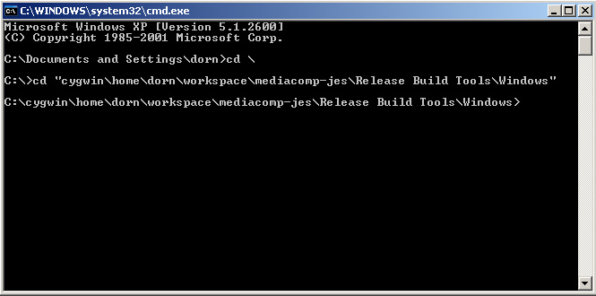
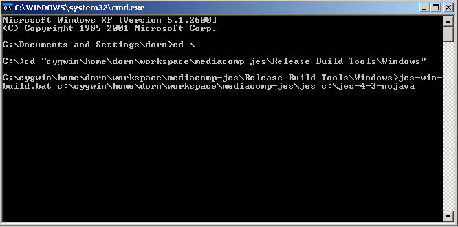
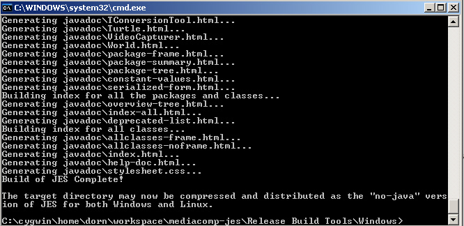
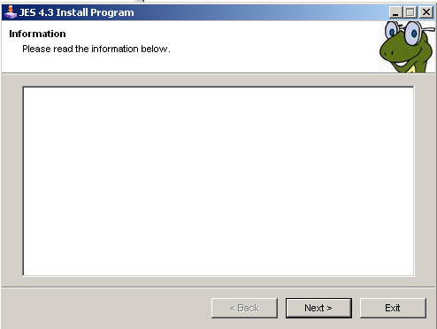
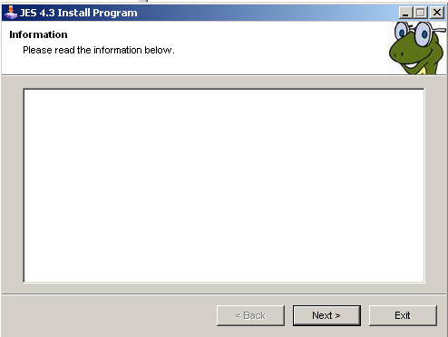

JES Build Instructions for Windows
This document describes the JES distribution build processes for Windows. Not only does this create the Windows releases, but it serves as the basis for all other versions of the release. There are three main components to this process: creating a distribution copy of the current JES code, building an installer for the no-JRE version, and building the installer for the JRE included version. These are each addressed below.
Creating the Distribution Copy
This is the primary step to creating a JES release. The output of this step is a directory containing all of the necessary code and executable components for the "no-java" release. This resultant directory will be used in creating all of the other releases, so it is critical that it be created correctly.
Step 0: RUN ALL REGRESSION TESTS
Before you proceed any futher, ensure that your local SVN project for mediacomp-jes contains all of the current code, that this code compiles, and that this code passes all regression tests as well as any other testing of changes made since the last version was released. See testing documentation for more information.
Step 0.5: Record Version Number
Once you've convinced yourself that the code is ready to be released, make sure that all edits are committed to SVN and record the current SVN version number. Edit the Google Code project page and indicate which SVN version corresponds to the JES release version you're building. This helps recover versions of the code at particular release points in the future if necessary.
Step 1: Verify the files
In the "Release Build Tools\Windows" subdirectory of your local mediacomp-jes project directory you will find two files to help you in this step. "jes-win-build.bat" is a DOS batch file which automates much of this build process, and "make.exclude" is a text file that contains a list of all of the files to exclude while copying JES from your SVN project. DO NOT EDIT THESE FILES. Simply verify that they exist.
Step 2: Open Command Prompt to Build Tools
Open a command prompt terminal and go to the directory containing the "jes-win-build.bat" script. E.g.:

Step 3: Execute the Build Script
From the command prompt, execute the build script. The script takes two arguments: the path to your "jes" directory in the SVN project and a destination directory. For example, if I would like to build a release directory for JES 4.3 called C:\jes-4-3-nojava , I might specify the following arguments:

Executing the script will take a few minutes as it copies all the necessary files and compiles this local copy of JES. If all goes well, you should end up with a screen that looks like this:

Step 4: Compress the Directory
The directory created by the script in the last step is everything you need to create the JES release that does not come with a JRE. To finish the process, simply right click on the folder you created (e.g., "c:\jes-4-3-nojava") and compress it using Send To->Compressed (zipped) folder. This zip file is the distribution that should be used for Windows and Linux users. This zip file also will be used to create all of the other JES distrubtions.
Step 5: Test the zip file
Once you have saved the compressed copy of JES, you should test it on other computers to ensure it works as expected. At the very least, ensure that JES.exe runs correctly after unzipping it on a Windows machine and that JES.sh runs correctly on a Linux machine. After you've verifed this works correctly, you can upload this file to Google Code and tag it appropriately.
No-Java Windows Installer
These instructions help guide you through the creation of an executable installer for JES that will work in Windows XP and Vista. You must have completed the above process for "Creating the Distribution Copy" before you can proceed. These instructions assume that you have done so and that the directory containing the files to be released is "jes-4-3-nojava" on the Desktop.
Step 0: Download the Install Creator
You'll need to have a copy of Clickteam Install Creator for this process. You can download the freeware version of this program from http://www.clickteam.com/website/usa/installcreator.html.
Step 1: Start Install Creator
Once you've downloaded and installed Clickteam Install Creator, you can start the program. You'll be prompted with a wizard, which we'll use to guide us through the creation process:

Click "Next" to get started.
Step 2: Directory
On the Directory step you need to select the directory that you created for the release distribution in the earlier process. Click "Browse" and locate your directory. Be careful to select the top-most directory for JES, and not one of its subdirectories. After you click "OK", verify that "Include Sub-directories" is checked. Then click "Next".
Step 3: Setting your program's title
Verify that English is selected as the language of choice, and enter the name of this release of JES. Forexample, "JES 4.3". Click "Next" to continue.
Step 4: Window
Use the defaults on this screen and click "Next".
Step 5: Wizard Template
You will leave the installation template set to Default, but you will want to specify images for the left and top bitmaps to customize the look of the installer. For the "left bitmap" select "jes.bmp" located in the directory containing instructions for the Windows build process. Use "jesicon.bmp" for the "top bitmap". To verify that you've selected things correctly, check to see that the previews match the two shown below:
 

Close the previews and click "Next" to continue.
Step 6: Information
In this step you can enter text to be displayed to the user during the install process. Because this release does not come with a bundled JRE, we'll use this to include a warning message. Paste in the following text and click "Next" to continue:
This version of JES requires that you already have the Java Runtime Environment (1.5 or greater) installed on your computer. Please visit http://www.java.com to download and install Java.
Step 7: License
Leave this text box blank and click "Next"
Step 8: Installation Directory
Verify that the installation directory is set to "#Program Files#\JES 4.3" (where JES 4.3 is replaced by the name you gave the project in step 3). Click "Next".
Step 9: Shell
Click "Browse" and select JES.exe as the name of the file you'd like to create and icon for in the start menu. Use a name like "JES 4.3" for this icon and click "Next" to continue.
Step 10: End page options
You can leave both of these boxes blank and click "Next".
Step 11: Uninstallation
Ensure that "uninstall program" is checked so that an uninstaller for JES will be created. Click "Next".
Step 12: End
Click "Finish" to build and save the executable installer. You will be prompted for a filename to be used for the executable with at Save As dialog. Save the installer to your Desktop with a name like "jes-4-3-nojava.exe" to clearly indicated which version of JES it corresponds to. You will see a lot of output in the log window as the program creates the installer. Once it's finished you may close Clickteam Install Creator (no need to save changes).
Step 13: Test the installer
Test the installer on both Windows XP and Vista machines to ensure that it functions properly. Test to see that it not only installs properly, but that JES executes correctly from the Start Menu after installation.
JRE-Included Windows Installer
These instructions help you build an executable installer for Windows that will install JES with the Java JRE included. There are only a few steps that make this different from the no-java installer, so we only highlight the differences here.
Step 0
Download the JRE you'd like to include from Sun. Copy the folder containing the JRE you've downloaded and installed to a new folder called "win-jre" inside the JES distribution directory created in the "Creating the Distribution Copy" process. This folder should contain various copyright information from Sun, as well as "bin" and "lib" subdirectories. Once you've verified this looks correct, proceed with creating the installer using Clickteam Install Creator and the instructions above. However, in step 6, you don't need to include a warning about needing the JRE already installed.
Step 13: Test the installer
Be sure to test this installer on computers that do not have a copy of the JRE installed elsewhere to make sure that the startup scripts correctly locate the bundled JRE located in "win-jre".